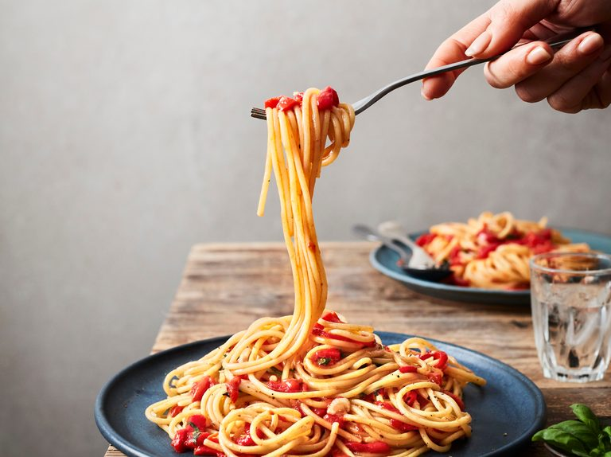
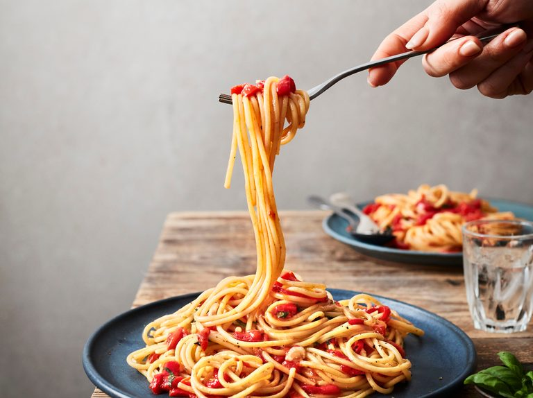
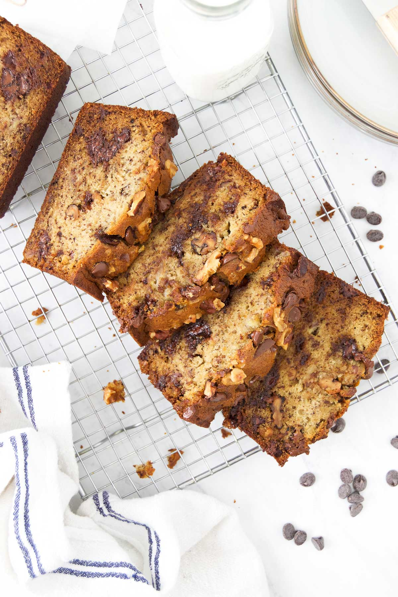

Spaghetti Recipe

Orgin
Italian
Source
Own Recipe
Category
Main Dish
Recipe Ingredients
Dry spaghetti noodles, pasta sauce, cheese, basil.
Recipe Steps
- In a pan, add the pasta sauce and just enough water to cover the bottom of the pan. Next, bring the mixture to a boil.
- Then, add the spaghetti noodles to the pan and cook according to the packaging instructions.
- Once the noodles are cooked, plate on a pan and add cheese on top.
Photo Gallery

 

Homemade Mac n Cheese Recipe

Orgin
Northern Europe
Source
Own Recipe
Category
Main Dish
Recipe Ingredients
Macaroni, butter and flour, milk, cheese, seasonings, bread crumbs.
Recipe Steps
- Preheat oven to 375°. Grease a 13"x9" baking dish with butter. In a large pot of boiling salted water, cook macaroni, stirring occasionally, until al dente, 5 to 6 minutes. Drain.
- In a large saucepan over medium heat, melt 1 stick butter. Sprinkle flour over and cook, stirring, until slightly golden, 2 to 3 minutes. Pour in milk and whisk until combined. Add mustard powder; season with salt and pepper. Bring to a simmer over medium-high heat and cook, stirring, until sauce starts to thicken, about 2 minutes.
- Remove pan from heat and whisk in cheddar, Gruyère, and 1 cup Parmesan until melted and smooth. Stir in macaroni and transfer to the prepared dish.
- In a small bowl, combine panko, oil, and remaining 1/2 cup Parmesan. Sprinkle over macaroni; season with more pepper.
- Bake mac and cheese until bubbly and golden, 25 to 30 minutes. Let cool for 10 minutes.
A Bit About the Dish
Macaroni and cheese, commonly known as mac & cheese, is a comfort food staple that has captured the hearts of people all over the world.
Originating from Europe and popularized in the United States, this dish consists of elbow macaroni pasta smothered in a creamy cheese sauce.
The simplicity of its ingredients—pasta, cheese, and often a touch of butter or milk—belies a rich, complex flavor that has made it a favorite for both quick weeknight dinners and festive holiday gatherings.
Photo Gallery


Chocolate Chip Banana Bread

Orgin
American
Category
Dessert
Recipe Ingredients
- Cooking spray
- 2 cups (240 g) all-purpose flour
- 1 tsp. baking soda
- 1/2 tsp. kosher salt
- 1 large egg plus 1 egg yolk
- 1 cup (200 g) granulated sugar
- 1/2 cup (1 stick) unsalted butter, melted
- 1/4 cup sour cream
- 1 tsp. pure vanilla extract
- 3 ripe bananas, mashed
- 1/2 cup chopped toasted walnuts
- 1/2 cup semisweet chocolate chips
Recipe Steps
- Preheat the oven to 350º. Line a 9"-by-5" loaf pan with parchment and grease with cooking spray.
- In a medium bowl, whisk flour, baking soda, and salt.
- In a large bowl, mix egg, egg yolk, granulated sugar, butter, sour cream, and vanilla. Add bananas and stir until combined. Gradually add dry ingredients to banana mixture until just combined.
- Fold in walnuts and chocolate chips and transfer to prepared pan.
- Bake bread until a tester inserted into the center comes out clean, about 1 hour. Let cool 10 minutes in pan, then invert onto a wire rack and let cool completely.
A Bit About the Dish
This is a tried-and-tested recipe that I have used numerous times for making the perfect chocolate chip banana bread! Not only does it help utilize the bananas that have slowly overripened at the back of the fridge, it ends up creating an incredibly delicious, and relatively healthy, dessert.
Photo Gallery
